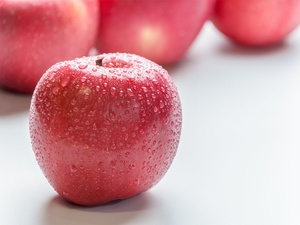
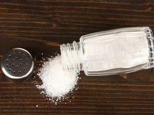

News
-

Morning golden apple, evening poisonous apple? Today, we will address five questions about apples all at once.
Apples are round in shape and have a delicious sweet and sour taste. They are a common fruit that is suitable for people of all ages. Apples are rich in carbohydrates, apple polyphenols, aromatic alcohols, acids, and pectin. There are various claims about the benefits of apples, but is it really true?
-

You may have eaten the wrong salt at home! Iodized salt, non-iodized salt, low sodium salt, tell you the truth about salt!
"Grandpa, how many times have I told you, don't put so much salt in the dish, you can't stand eating kidneys like this often!" "Don't talk nonsense here, I've eaten like this for most of my life, and I haven't seen my kidneys are bad, and I don't have high blood pressure, so I can eat it with confidence, there will be no problem!"
-
It turns out that bone broth does not supplement calcium? Reminder: Many people do not like to eat the 3 foods that really supplement calcium
With the improvement of living standards, more and more attention is paid to calcium supplementation. But milk is drunk from morning to night, bone broth is drunk from small to large... After various calcium supplementation operations, many people are still - calcium deficiency is serious.